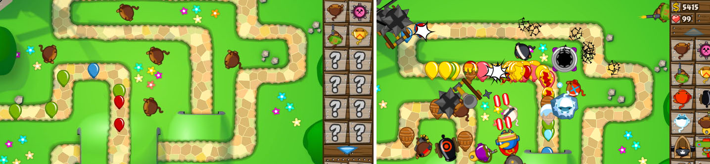
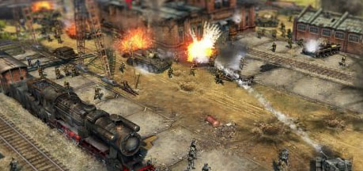

Tower Defence is one of the most popular type of Strategy game. Pictured above is Bloons Tower Defence.
Tower Defence and Turn-based strategy.
Tower Defence and Turn-based strategy.
Tower Defence games have a very simple layout. Usually, computer-controlled monsters called creeps move along a set path, and the player must place, or "build" towers along this path to kill the creeps.In most tower defense games different towers have different abilities such as poisoning enemies or slowing them down. The player is awarded money for killing creeps, and this money can be used to buy more towers, or buy upgrades for a tower such as increased power or range.
The term turn-based strategy (TBS) is usually reserved for certain computer strategy games, to distinguish them from real-time strategy games. A player of a turn-based game is allowed a period of analysis before committing to a game action, and some games allow a certain number of moves or actions to take place in a turn.
The term turn-based strategy (TBS) is usually reserved for certain computer strategy games, to distinguish them from real-time strategy games. A player of a turn-based game is allowed a period of analysis before committing to a game action, and some games allow a certain number of moves or actions to take place in a turn.
